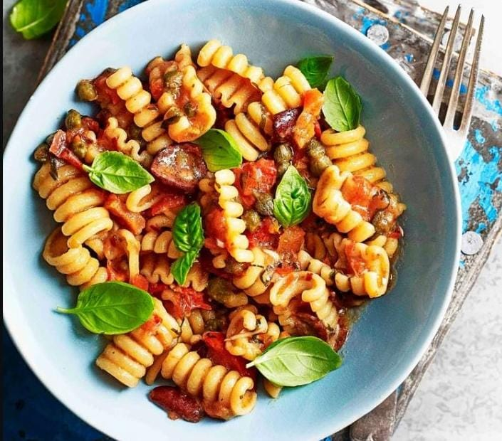

Paste Recipe

Description
Making fresh pasta at home is easy. It does not require more than a roller
to stretch it and a knife to cut it. You can customize it, it has more
flavor and texture, and it produces a sense of accomplishment that won't
take away for a long time.
There are two types of fresh base pasta. On the one hand, the one that is
made with durum wheat flour and water, once formed, let it dry. On the
other hand, fresh egg pasta. The latter is made with loose flour and
requires the addition of egg (protein) in order to give cohesion to the
dough itself as well as elasticity.
Ingredients
- - 400g spaghetti
- - 2 eggs
- - 150g of cured cheese (Parmesan, Manchego…)
- - 120g of bacon or pancetta
- - salt and pepper
- - a little drizzle of olive oil
Steps
-
We put a handful of salt (generous) in plenty of boiling water. Then we
add the spaghetti and let them cook here for about 10 minutes. until
they are al dente. They should be stirred frequently, especially at the
beginning of cooking, so that they do not stick.
-
While they cook, prepare the carbonara. In a bowl add the egg yolks. It
is better to save the white for another preparation since, if we add it,
it will look more like a spaghetti omelette than a sauce itself. But if
you don't mind, you can add it. We also add the grated cheese and mix
both ingredients with a fork. There will be a kind of very dense mass
and this will be the carbonara.
-
In a frying pan we put a small drizzle of oil. When it is very hot, add
the bacon or pancetta, cut into rather small cubes. After a couple of
minutes, when they are fried, remove from the heat and reserve
-
Once this is done and when the spaghetti is cooked, we save a few ladles
of the cooking broth. Then we drain the spaghetti from the rest of the
broth
-
Without delay, since it will be the residual heat of the spaghetti that
will cook the carbonara, we put the pasta in the bowl where we had
prepared it. Add the bacon, with the toy that they have been able to
release and a little of the cooking broth. We remove everything well
with a fork so that the spaghetti absorbs all the sauce. If you see that
it is very dense, you can add more cooking broth, until you have a very
creamy sauce (don't forget to stir everything vigorously. Pasta is very
porous and absorbs sauce relatively easily. But it needs to be stirred
to help This process)
-
Finally, when we have achieved the desired creaminess of the sauce,
sprinkle with plenty of freshly ground black pepper. It is said that the
name "carbonara" comes from the color that this spice gives it, which is
reminiscent of the color of coal. serve immediately